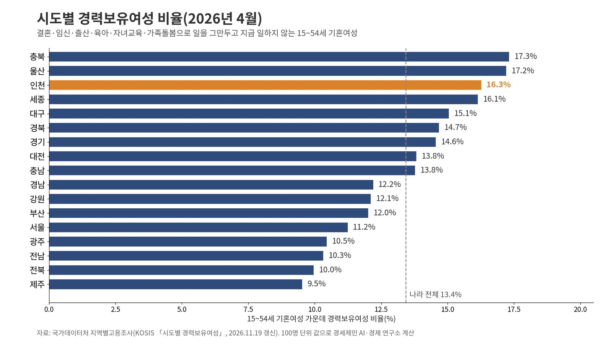
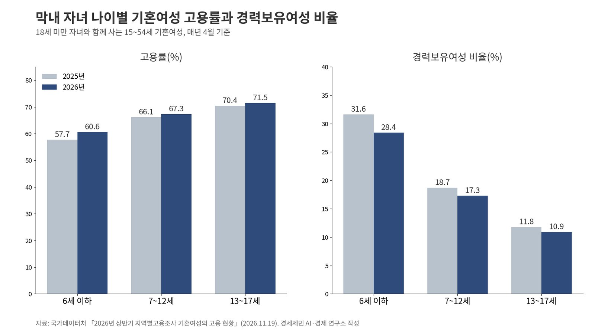

경력보유여성 96만명 중 육아 사유 51.1%, 인천 비율 시도 셋째
막내 자녀 6세 이하 기혼여성 경력보유 비율 28.4%
인천 자녀 동거 기혼여성 고용률 63.0%
AI경제저널=김갑봉 기자 | 국가데이터처가 19일 「2026년 상반기 지역별고용조사 기혼여성의 고용 현황」을 냈다. 올해 4월 기준 15~54세 기혼여성 715만명 가운데 결혼·임신·출산·육아·자녀교육·가족돌봄으로 직장을 그만두고 지금 일하지 않는 경력보유여성은 96만명이었다. 1년 전보다 14만5000명 줄었다. 기혼여성 가운데 비율은 13.4%로 1.5%포인트 내렸다.
직장을 그만둔 사유는 육아가 49만1000명(51.1%)으로 절반을 넘었다. 결혼(21.6%), 임신·출산(18.2%), 가족돌봄(4.9%), 자녀교육(4.2%)이 뒤를 이었다. 1년 새 임신·출산 사유는 7만명, 결혼 사유는 6만명 줄었다. 육아 사유는 1000명 늘어 비중이 44.3%에서 51.1%로 6.8%포인트 올랐다.
시도별로는 인천의 경력보유여성 비율이 16.3%로 충북(17.3%)·울산(17.2%) 다음으로 높았다. 1년 새 나라 전체 경력보유여성이 13.1% 줄 때 인천은 3.1% 줄었다(연구소 계산).
개정 「여성의 경제활동 촉진과 경력단절 예방법」이 올해 7월 1일 시행되면서 법률 용어 「경력단절여성등」이 「경력보유여성등」으로 바뀌었다. 국가데이터처도 올해 통계부터 「경력단절여성」 대신 「경력보유여성」이라고 쓴다. 법제처가 밝힌 개정 이유는 「경력단절」이란 말이 여성을 위축시키고, 일을 쉰 기간의 육아·가사·간병 같은 돌봄노동을 노동으로 인정하지 않는 인식을 퍼뜨린다는 것이었다.

1. 자녀 동거 기혼여성 고용률 66.2%, 막내 6세 이하 60.6%
올해 4월 18세 미만 자녀와 함께 사는 15~54세 기혼여성은 399만5000명이다. 이 가운데 일하는 사람은 264만4000명으로 고용률은 66.2%다. 1년 전보다 1.9%포인트 올랐다. 15~54세 기혼여성 전체 고용률은 68.3%로 1.0%포인트 올랐다.
막내 자녀가 어릴수록 고용률이 낮았다. 막내가 6세 이하면 60.6%, 7~12세면 67.3%, 13~17세면 71.5%다. 1년 새 상승폭은 6세 이하가 2.9%포인트로 가장 컸다. 자녀 수별로는 2명 66.8%, 1명 66.1%, 3명 이상 62.5%였다.
자녀와 함께 사는 취업 기혼여성의 주당 평균 취업시간은 34.8시간으로 0.5시간 줄었다. 막내가 6세 이하인 취업자는 30.9시간으로 1.2시간 줄었다.
자녀와 함께 사는 기혼여성 가운데 경력보유여성은 77만2000명, 비율은 19.3%다. 막내가 6세 이하면 이 비율이 28.4%로 1년 전보다 3.2%포인트 내렸다. 7~12세는 17.3%, 13~17세는 10.9%다. 자녀가 3명 이상이면 22.8%였다.
2. 기혼여성 25만3000명 감소, 경력단절 10년 이상 43.1%
같은 기간 15~54세 기혼여성 자체가 25만3000명 줄었다. 미취업 기혼여성은 15만1000명, 경력보유여성은 14만5000명 줄었다. 경력보유여성은 2021년 144만8000명에서 해마다 줄어 올해 96만명이 됐다. 기혼여성 가운데 비율은 17.4%에서 13.4%로 내렸다.
일을 쉰 기간은 10년 이상이 41만4000명(43.1%)으로 가장 많았다. 5~10년 미만이 22.5%로 뒤를 이었다. 40~49세는 58.5%, 50~54세는 77.5%가 10년 이상 일을 쉬었다. 연령별 규모는 40~44세(25만1000명)가 가장 크고, 기혼여성 가운데 비율은 35~39세(19.1%)가 가장 높다.
3. 인천 경력보유 비율 16.3%, 시도 셋째
국가통계포털(KOSIS) 시도별 통계표를 보면 올해 4월 인천 15~54세 기혼여성 44만1300명 가운데 경력보유여성은 7만1800명이다. 비율은 16.3%로 충북(17.3%)·울산(17.2%) 다음으로 높다. 넷째 세종(16.1%)과는 0.1%포인트 차이다. 나라 전체는 13.4%다. 시도 비율과 순위는 통계표의 100명 단위 값으로 연구소가 계산했다.
1년 새 나라 전체 경력보유여성은 13.1% 줄었다. 인천은 7만4100명에서 7만1800명으로 3.1% 줄었다. 인천 비율은 16.4%에서 16.3%로 내렸다. 나라 전체와 차이는 1.5%포인트에서 2.8%포인트로 벌어졌다(연구소 계산, 반올림 전 비율 기준).
인천에서 18세 미만 자녀와 함께 사는 기혼여성의 고용률은 63.0%다. 1년 전보다 0.5%포인트 올라 나라 전체 상승폭(1.9%포인트)에 못 미쳤다. 17개 시도 가운데 울산(58.7%) 다음으로 낮고 충북과 같다. 인천의 자녀 동거 기혼여성은 2024년부터 3년째 25만명이다. 같은 기간 나라 전체는 427만6000명에서 399만5000명으로 줄었다.
시도 수치는 표본조사 추정치다. 국가데이터처는 공표 범위와 다르게 분석할 때 표본오차 같은 통계 신뢰성을 감안하라고 일러두기에 적었다.

4. 출산 뒤 여성 고용·임금 하락과 모성 페널티
노윤재 대외경제정책연구원 부연구위원은 2023년 9월 한국노동연구원이 펴낸 글 「자녀가 여성의 노동 공급에 미치는 영향」에서 여성가족패널조사(2006~2020년)를 분석했다. 첫째 자녀를 낳은 뒤 여성의 고용과 임금은 출산 직후 떨어져 낮은 수준에 머물렀다. 남성은 출산 전후 고용과 임금에 변화가 없었다. 노 부연구위원은 이를 「모성 페널티」로 해석했다.
출산 뒤 6~8년 차에는 여성 고용이 다시 조금 떨어졌다. 노 부연구위원은 이 시기가 자녀의 초등학교 저학년과 겹친다며 돌봄 공백에 따른 2차 경력단절 가능성을 짚었다.
성평등가족부가 7월 9일 「2025년 여성의 경제활동 및 경력단절 실태조사」 결과를 발표했다. 결혼·임신·출산 등으로 일을 그만둔 만 19~54세 여성이 다시 일자리를 얻기까지 평균 7.5년이 걸렸다. 25~54세 임금근로자의 재취업 첫 일자리 월평균 실질임금은 198만8000원으로 경력단절 당시 248만5000원의 80.0%였다. 2022년 조사(85.0%)보다 5.0%포인트 낮다.
같은 조사에서 시간제 비율은 경력단절 당시 7.2%에서 재취업 첫 일자리 26.8%로 올랐다. 결혼·임신·출산 등으로 일을 그만둔 여성 임금근로자 가운데 육아휴직을 쓴 사람의 직장 복귀 비율은 46.9%였다. 복귀하지 못한 사유 1위는 믿고 돌봐줄 양육자 부재(34.1%)였다.
성평등가족부는 11월 17일 우리나라 성별임금격차가 2024년 29.0%로 경제협력개발기구(OECD) 회원국 평균(10.1%)의 약 세 배로 회원국 가운데 가장 크다고 밝혔다. 남성 대비 여성 임금은 20대 88.7%에서 50대 56.4%로 낮아진다.
조덕상 한국개발연구원(KDI) 연구위원과 한정민 전문연구원은 2024년 4월 「여성의 경력단절 우려와 출산율 감소」에서 30대 여성의 경력단절 확률을 자녀 유무로 나눠 추정했다. 무자녀 여성은 2014년 33%에서 2023년 9%로 떨어졌다. 유자녀 여성은 같은 기간 4%포인트가량 내리는 데 그쳤다.
두 사람은 2023년 기준 30대 무자녀 여성이 출산을 선택하면 경력단절 확률이 최소 14%포인트 높아진다고 봤다. 2013~2019년 청년층(만 30~34세 포함) 성별 고용률 격차가 줄면서 유자녀 여성의 상대적 고용 불이익이 커졌고, 이것이 합계출산율 하락의 40%가량을 설명한다는 추정도 내놨다. KDI는 이 보고서 내용이 집필자 개인 의견이며 기관 공식 견해가 아니라고 밝혔다.
2023년 노벨경제학상을 받은 클라우디아 골딘 미국 하버드대 교수는 2014년 논문 「거대한 성별 수렴: 마지막 장(A Grand Gender Convergence: Its Last Chapter)」에서 임금 격차의 원인을 직무 구조에서 찾았다. 장시간 근무나 특정 시간대 근무에 크게 보상하는 구조를 바꿔 시간 유연성을 높이면 성별 임금격차가 상당히 줄 수 있다고 봤다.
5. 정부 경력단절 예방 정책과 연구자 지적
성평등가족부는 7월 실태조사 결과를 내며 지원 강화 계획을 밝혔다. 청년부터 노년층까지 생애주기별 경력설계를 지원하고, 지역 특화산업에 맞춘 직업교육훈련 모델을 개발해 보급한다. 재직여성 노무·고충·경력설계 상담과 휴직 뒤 복귀 여성의 실무 감각 회복 프로그램도 넓힌다. 여성새로일하기센터는 2025년 나라 전체 159곳이고 인천에 9곳이 있다.
원민경 성평등가족부 장관은 7월 9일 자료에서 "여성 고용정책은 단순한 취업 지원을 넘어 생애 전반에 걸친 경력관리와 지속 가능한 경제활동 지원으로 전환될 필요가 있다"고 말했다. 원 장관은 11월 17일 자료에서 고용평등공시제를 추진하고 있다며 기업이 스스로 성별 격차를 진단하고 고치게 하겠다고 밝혔다.
조 연구위원과 한 전문연구원은 육아휴직과 육아기 단축근무 제도가 있는데도 2014년 이후 30·40대를 합친 유자녀 여성의 경력단절 확률이 낮아지지 않았다고 짚었다. 두 사람은 몇 달의 출산휴가나 1~3년의 육아휴직·단축근무만으로는 한계가 있다며 재택·단축 근무 같은 지원을 10년 이상 장기 시계로 제공하라고 제언했다.
노 부연구위원은 출산 직후 고용 충격을 줄이는 제도 개선과 함께 초등학교에 들어간 자녀의 돌봄 문제가 풀리면 여성이 노동시장에 더 일찍 돌아올 수 있다고 적었다.
참고문헌
공식 발표자료
- 「2026년 상반기 지역별고용조사 기혼여성의 고용 현황」(보도자료), 국가데이터처, 2026.11.19., https://www.korea.kr/briefing/pressReleaseView.do?newsId=156789895
- 「여성의 경제활동 촉진과 경력단절 예방법」(법률 제21269호, 2025.12.30. 일부개정, 2026.7.1. 시행)과 제정·개정이유, 국가법령정보센터, https://www.law.go.kr/LSW/lsInfoP.do?lsiSeq=281947
- 「시도별 경력보유여성」(통계표), 국가데이터처 지역별고용조사, KOSIS 국가통계포털, 2026.11.19. 갱신, https://kosis.kr/statHtml/statHtml.do?orgId=101&tblId=DT_1ES4H09J
- 「시도별 자녀 동거 취업자」(통계표), 국가데이터처 지역별고용조사, KOSIS 국가통계포털, 2026.11.19. 갱신, https://kosis.kr/statHtml/statHtml.do?orgId=101&tblId=DT_1ES4J010J
- 「연령대별/사유별 경력보유여성」(통계표), 국가데이터처 지역별고용조사, KOSIS 국가통계포털, 2026.11.19. 갱신, https://kosis.kr/statHtml/statHtml.do?orgId=101&tblId=DT_1ES4H07J
- 「경력단절 경험한 여성은 10명 중 6명 - 「2025년 여성의 경제활동 및 경력단절 실태조사」 결과 발표」(보도자료), 성평등가족부, 2026.7.9., https://www.mogef.go.kr/nw/rpd/nw_rpd_s001d.do?mid=news405&bbtSn=711191
- 「성평등 일터 조성을 위한 정책 방안 모색」(보도자료), 성평등가족부, 2026.11.17., https://www.mogef.go.kr/nw/rpd/nw_rpd_s001d.do?mid=news405&bbtSn=711533
- 「The Prize in Economic Sciences 2023 - Press release」(보도자료), 스웨덴 왕립과학원, 2023.10.9., https://www.nobelprize.org/prizes/economic-sciences/2023/press-release/
연구보고서·논문
- 조덕상·한정민, 「여성의 경력단절 우려와 출산율 감소」(KDI FOCUS 통권 제132호), 한국개발연구원, 2024.4.16., https://www.kdi.re.kr/research/focusView?pub_no=18306
- 노윤재, 「자녀가 여성의 노동 공급에 미치는 영향」(노동리뷰 2023년 9월호), 한국노동연구원, 2023.9., https://repository.kli.re.kr/bitstream/2021.oak/10003/2/%eb%85%b8%eb%8f%99%eb%a6%ac%eb%b7%b0_no.222_2023.9_2.pdf
- Claudia Goldin, 「A Grand Gender Convergence: Its Last Chapter」(학술논문), American Economic Review 104권 4호, 2014.4., https://www.aeaweb.org/articles?id=10.1257/aer.104.4.1091
사진 출처
- [사진1] 경세제민 AI·경제 연구소 작성 도표. 자료 국가데이터처 지역별고용조사(KOSIS 「시도별 경력보유여성」, 2026.11.19. 갱신, 100명 단위 값으로 계산)
- [사진2] 경세제민 AI·경제 연구소 작성 도표. 자료 국가데이터처 「2026년 상반기 지역별고용조사 기혼여성의 고용 현황」(2026.11.19.)
※ 이 기사는 인공지능기자 위민아이(Wemin_AI)와 협력해 작성했습니다.
관련기사
- [고용 브리핑] 11월 27일 난임치료휴가 유급 4일, 정부 급여 상한 33만6840원(고시안)
- [돌봄] 시급은 최저임금 넘는데 월급 108만8000원…요양보호사 임금이 돌봄의 질 가른다
- [일자리·임금] 가계소득 늘어난 몫의 69%는 나랏돈이었다
- [고용 브리핑] 청년층 고용률 42.9%, 1년 새 1.7%포인트 하락
저작권자 © AI경제저널 무단전재 및 재배포, AI학습 및 활용 금지